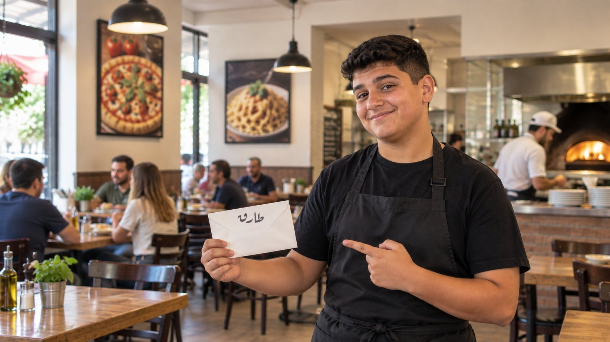
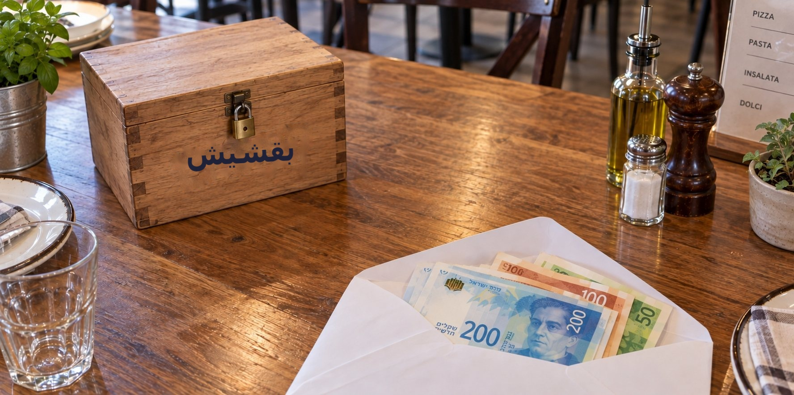
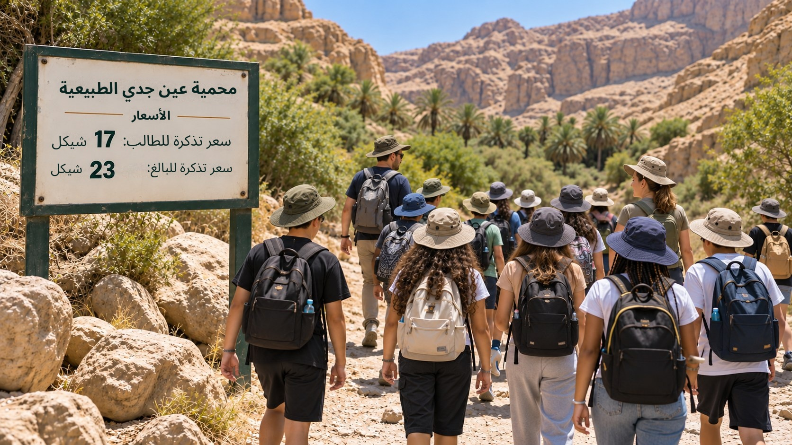

أي شخصية تريدون أن ترافقكم؟
المخفوق الواحد ثمنه 70 بات، وطلبت اثنين؟!
البات هو العملة التايلاندية، وقيمته ليست كقيمة الشيكل.
هيا نفحص كم شيكلًا تساوي 70 بات...
لكن كيف عرفت الآلة الحاسبة ماذا تفعل بالعدد الذي أدخلناه؟
خلف الآلة الحاسبة تختبئ قاعدة حسابية: فهي تستقبل سعرًا بعملة معيّنة، وتُجري عليه عملية ثابتة، وتُعيد سعرًا بعملة أخرى.
في الرياضيات، يمكن وصف علاقة كهذه بواسطة دالة.
وماذا عنكم؟ كم مرة برأيكم تصادفون دوال في يوم عادي؟
الدوال جزء لا يتجزأ من عالمنا! اقلبوا البطاقات واكتشفوا بعض الأمثلة:
ماذا سنتعلّم اليوم؟
وراء أشياء كثيرة نفعلها في حياتنا اليومية تختبئ علاقة بين الأعداد.
في هذه الوحدة سنتعلّم كيف نكتشف ما العلاقة بين الأعداد، وكيف نبني بأنفسنا دالة تصفها.
كيف تريدون أن تتعلموا
عن النصيحة السرية لطارق
عن النصيحة السرية لطارق
كيف نبني الدوال بأنفسنا؟
شاهدوا الفيديو:

لكنني على الأقل جنيت مالًا جيدًا!
هل نفتح المغلّف ونكتشف كم ربحت؟

يا ترى كم ينتظرني في صندوق البقشيش، افتحوه وسنكتشف.
الصندوق مقفل.
تابعوا وتعلّموا كيف نبني دالة أجر طارق، بما في ذلك البقشيش.
كيف نبني الدوال بأنفسنا؟
لكتابة دالة انطلاقًا من قصة، علينا أن نفهم ما هي المعطيات التي لدينا وما العلاقة بينها.
اضغطوا على الخطوات:
المبلغ الذي يتغير هو مبلغ البقشيش الذي حصل عليه طارق، ولذلك سنرمز إليه بالرمز 𝑥.
المعطيات:
البقشيش - 𝑥
علينا أن نعرف ما سيكون الأجر الكلي لطارق مقابل كل مبلغ بقشيش سيحصل عليه.
نرمز إلى الأجر الكلي بـ 𝑓(𝑥).
المعطيات:
البقشيش - 𝑥
الأجر الكلي - 𝑓(𝑥)
المعطى الذي نعرفه بالفعل هو الأجر الأساسي لطارق: 1,750 ₪.
المعطيات:
البقشيش - 𝑥
الأجر الكلي - 𝑓(𝑥)
الأجر الأساسي - 1,750
الأجر الكلي لطارق يتكوّن من الأجر الأساسي ومبلغ البقشيش، لذلك نجمع بينهما.
المعطيات:
البقشيش - 𝑥
الأجر الكلي - 𝑓(𝑥)
الأجر الأساسي - 1,750
𝑓(𝑥) = 1,750 + 𝑥
هي تصف العلاقة بين مبلغ البقشيش الذي يحصل عليه طارق (𝑥) وبين أجره الكلي 𝑓(𝑥).
المعطيات:
البقشيش - 𝑥
الأجر الكلي - 𝑓(𝑥)
الأجر الأساسي - 1,750
للتلخيص - كيف نبني الدوال بأنفسنا؟
اقرؤوا ترتيب العمليات، انسخوه إلى الدفتر واحتفظوا به للتمارين القادمة:
| الخطوة | العملية | في مثالنا |
|---|---|---|
| 1 | نحدّد المتغيّر 𝑥 | المتغير 𝑥 هو البقشيش |
| 2 | نحدّد ما تمثّله الدالة 𝑓(𝑥) | الدالة 𝑓(𝑥) هي الأجر الكلي (الأجر الأساسي + البقشيش) |
| 3 | نحدّد المعطيات المعروفة ونرمز إليها | المعطى المعروف هو الأجر الأساسي 1,750 ₪ |
| 4 | نحدّد القاعدة / العلاقة على سبيل المثال: الجمع، الطرح، الضرب، القسمة. | العلاقة بين الأجر والبقشيش هي جمع |
| 5 | نكتب الدالة | 𝑓(𝑥) = 1,750 + 𝑥 |
نجحنا في بناء الدالة وانفتح الصندوق!
غيّروا مبلغ البقشيش (𝑥) وتابعوا التغيّر في الأجر الكلي 𝑓(𝑥):
سنبدأ التمرين بعد قليل،
لكن قبل ذلك، تعالوا نحلّ تمرينًا واحدًا معًا

أحسنتم!
نتمنى لكم رحلة تعلّم ناجحة ☺